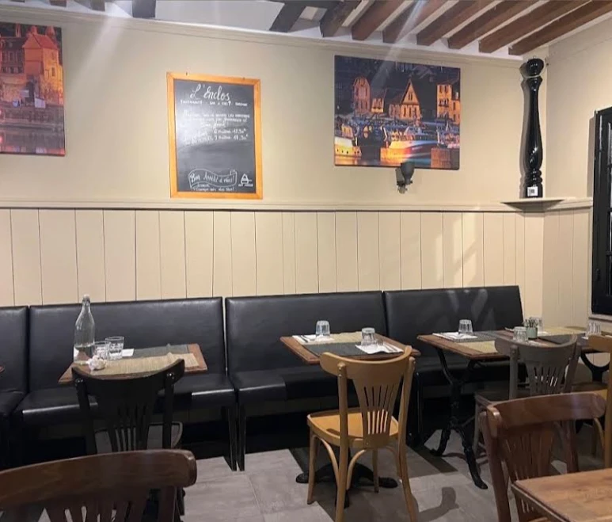
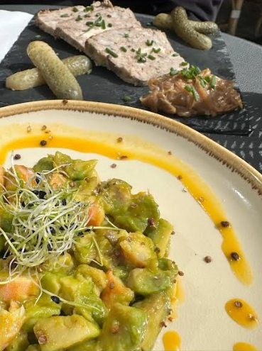
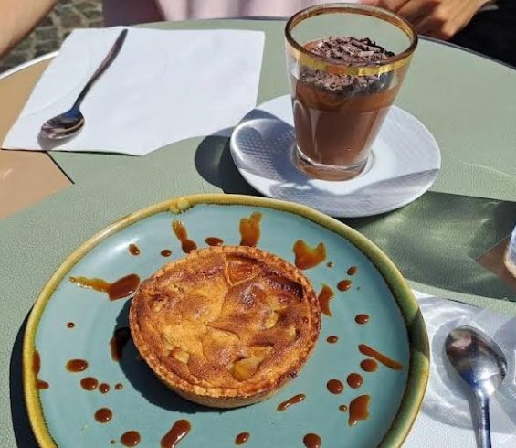
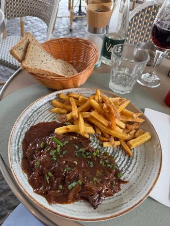

L'Enclos
Huisgemaakte keuken, lokale producten, op het terras of in de zaal.
ReserverenEen familiebistro, gerund door een vader en zijn zoon, in de Rue de la Ville, in het hart van het oude Honfleur, in de voormalige wijk L'Enclos waaraan het zijn naam dankt. Hier duwt u de deur open alsof u bij vrienden op bezoek gaat: straatjes met kasseien, gevels van weleer en, op een steenworp afstand, het Vieux Bassin. Aan tafel: huisgemaakte bistrokeuken met lokale producten en een wijnbar om het moment te rekken, zonder haast.
Terras of zaal, bel ons gerust. De zaal kan worden afgehuurd voor uw groepen en gelegenheden.

Suggestie van de chef
Gebakken sint-jakobsschelpen, hartige flan en groentebrunoise
20 €
Al onze wijnen op fles komen van onafhankelijke wijnbouwers.

Avocadotartaar & varkensterrine

Normandische taart & chocolademousse

Runderhanger met sjalotsaus — een van onze suggesties
Dinsdag t/m zondag
10.00 – 21.00 uur, doorlopende service
Maandag gesloten
Terras of zaal. De zaal kan op aanvraag worden afgehuurd.